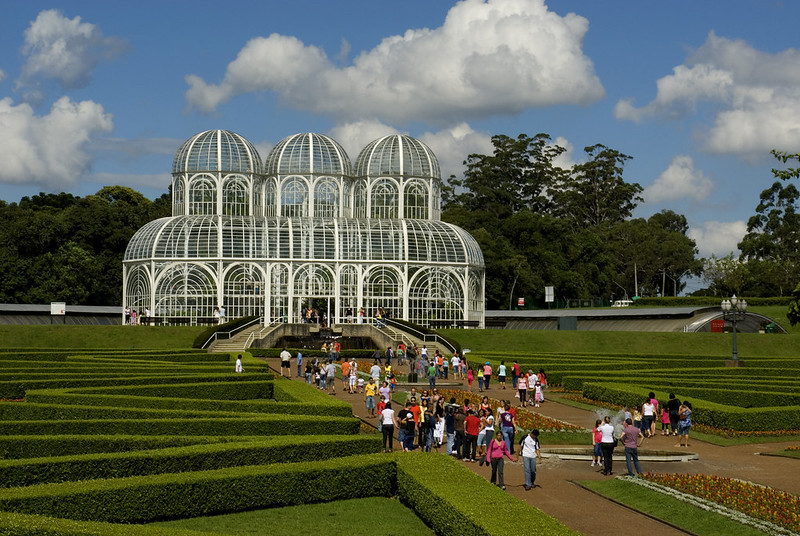
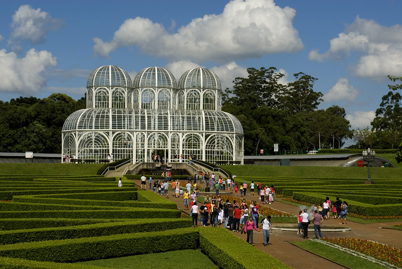

Turismo no Paraná
O turismo no Paraná é diversificado e atrai visitantes por suas belezas naturais, riqueza cultural e desenvolvimento urbano. O estado abriga uma das Sete Maravilhas da Natureza, as Cataratas do Iguaçu, localizadas no Parque Nacional do Iguaçu, em Foz do Iguaçu, um dos destinos turísticos mais visitados do Brasil. A capital, Curitiba, se destaca pelo planejamento urbano, parques e atrações como o Jardim Botânico. O litoral paranaense oferece belas praias, como a Ilha do Mel, ideal para ecoturismo. Além disso, a região de Vila Velha encanta com suas formações rochosas únicas, e as cidades históricas.
 
